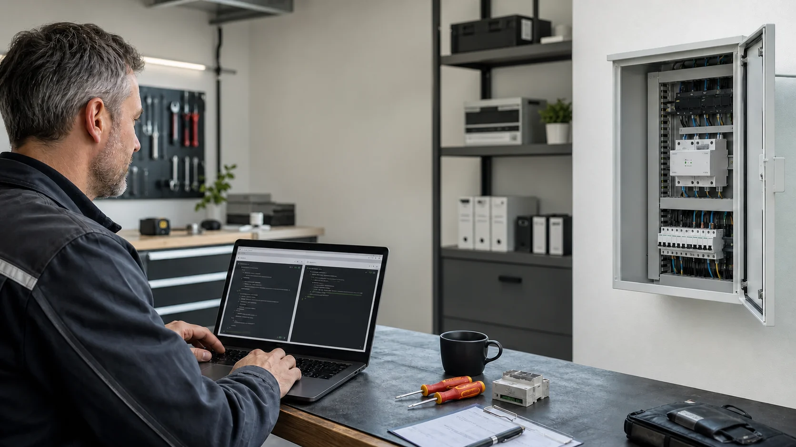

Eine Plattform für unterschiedliche Anlagen
Elektrofachbetriebe treffen in der Praxis auf sehr unterschiedliche Kombinationen aus Wechselrichtern, Speichern, Wallboxen, Fahrzeugen, Wärmepumpen und Energiezählern. eHive One setzt deshalb auf eine herstellerübergreifende Plattform. Statt für jede Anlage eine vollständig andere Insellösung zu betreuen, steht eine gemeinsame lokale Basis für Energiemanagement, Ladefunktionen und ergänzende eHive Apps zur Verfügung.
Die Hutschienen-Hardware sitzt dort, wo die relevanten Schnittstellen zusammenlaufen. Ethernet beziehungsweise PoE, RS485 und der digitale Eingang für Anwendungen im Umfeld von § 14a EnWG schaffen eine praxisnahe Grundlage für die Integration. Welche Komponenten und Funktionen in einer konkreten Anlage eingesetzt werden, plant, konfiguriert und prüft der verantwortliche Integrator.
Fernwartung direkt im Browser
Für den schnellen Service kann der SSH-Zugang über den Browser geöffnet werden. Der Techniker benötigt dafür auf seinem Arbeitsgerät keine separat eingerichtete Terminal-Anwendung. Nach erfolgreicher Anmeldung steht eine textbasierte Sitzung im Browser zur Verfügung.
Diese Variante eignet sich besonders für eine erste Diagnose, das Prüfen von Status und Protokollen oder eine gezielte Konfigurationsänderung. Der Zugang bleibt kontrolliert und muss nicht durch eine dauerhaft öffentlich erreichbare Gerätefreigabe ersetzt werden.
Direkter SSH-Zugang vom eigenen Rechner
Wer mit den gewohnten Werkzeugen arbeiten möchte, kann den SSH-Zugang auch direkt vom lokalen PC oder Notebook aufbauen. Damit lassen sich vorhandene Terminal-Workflows, Schlüsselverwaltung und – abhängig von der freigegebenen Umgebung – weitere SSH-Werkzeuge verwenden.
Im lokalen Kundennetz kann der Zugriff direkt auf die lokale Adresse des eHive One erfolgen. Für die Betreuung aus der Ferne wird der zuvor eingerichtete und autorisierte Fernzugang verwendet. Welche Zugangsvariante freigegeben wird, entscheidet der verantwortliche Betrieb passend zu seinem Sicherheits- und Servicekonzept.
Was sich aus der Ferne erledigen lässt
- Status prüfen: Erreichbarkeit, laufende Dienste und relevante Protokolle kontrollieren.
- Konfiguration anpassen: Geräteparameter, Zuordnungen und freigegebene Automationen aktualisieren.
- Fehler eingrenzen: Kommunikationsprobleme mit Wallbox, Wechselrichter, Speicher oder Zähler analysieren.
- Software pflegen: freigegebene Updates vorbereiten, durchführen und anschließend kontrollieren.
- Erweiterungen begleiten: neue Geräte oder zusätzliche eHive Apps konfigurieren und testen.
- Kunden unterstützen: Einstellungen gemeinsam prüfen, ohne zunächst einen Vor-Ort-Termin einplanen zu müssen.
Damit werden viele Änderungen und Anpassungen unmittelbar aus der Ferne möglich. Anfahrt, Terminabstimmung und Reisezeit entfallen überall dort, wo keine Arbeit an der elektrischen Anlage oder Hardware erforderlich ist.
Weniger Fahrten, schnellerer Service
Eine kleine Parameteränderung oder die Analyse eines Kommunikationsfehlers kann sonst schnell einen vollständigen Außendiensttermin auslösen. Mit vorbereitetem Fernzugang kann der Fachbetrieb zunächst remote prüfen, ob sich das Anliegen softwareseitig lösen lässt. Das verkürzt Reaktionszeiten und schafft freie Kapazität für Arbeiten, die tatsächlich vor Ort durchgeführt werden müssen.
Auch nach der Inbetriebnahme bleibt der Integrator handlungsfähig: Änderungen am Tarif, ein neues Fahrzeug, eine andere Ladepriorität oder ein zusätzliches Gerät können – soweit technisch unterstützt und sicher aus der Ferne umsetzbar – ohne erneute Anfahrt begleitet werden.
Verantwortung bleibt beim Fachbetrieb
Fernzugriff ersetzt keine fachgerechte Planung, Prüfung und Abnahme. Der Integrator entscheidet, welche Zugänge aktiviert werden, wie Benutzer und Schlüssel verwaltet werden und welche Änderungen remote zulässig sind. Vor produktiver Nutzung sowie nach relevanten Anpassungen müssen Funktionen und Schutzmaßnahmen geprüft und dokumentiert werden.
Arbeiten an der Elektroinstallation, Messungen, die nur vor Ort möglich sind, und Hardwarefehler erfordern weiterhin einen Einsatz beim Kunden. eHive One hilft dabei, Software- und Konfigurationsaufgaben davon klar zu trennen – und unnötige Fahrten zu vermeiden.
eHive One als Serviceplattform
Für Elektrofachbetriebe ist eHive One damit mehr als ein Energiemanager. Die Plattform schafft eine wiedererkennbare technische Basis für unterschiedliche Kundenanlagen und ermöglicht einen planbaren Servicezugang. Lokale Funktion, offene Integration und kontrollierte Fernwartung greifen zusammen.
Du möchtest eHive One in deinen Projekten einsetzen oder den passenden Fernwartungsweg für deinen Betrieb abstimmen? Sende uns deine typische Anlagenkonfiguration und deine Anforderungen an den Servicezugang.